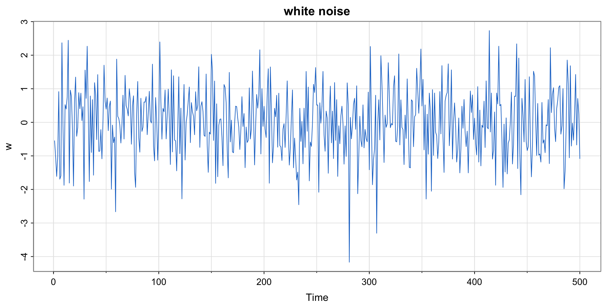

第二讲：时间序列模型简介
深圳大学中国经济特区研究中心
粤海校区汇文楼1510
https://huangjp.com/
为了利用已知的时间序列数据预测未来的变化趋势，我们需要了解数据是如何生成的。然而世界是复杂的，而可获得的数据是有限的，因此我们无法完全理解数据的生成机制。
科学的发展告诉我们，通过简单的模型描述复杂的现象在很多时候是有效的。
时间序列模型
描述时间序列数据 \{x_t\} 的模型是一个能够产生 \{x_t\} 的随机变量序列 \{X_t\} 1。
最简单的时间序列模型是白噪声模型。它是一组相互不相关的随机变量 w_t, 且每个随机变量都具有零均值和有限方差 \sigma_w^2 。
白噪声（white noise）
随机过程 \{w_t\}，其中 E(w_t) =0，\mathit{Var}\,(w_t) = \sigma_w^2 < \infty。 也可以写成 w_t \sim \mathit{wn}\,(0, \sigma_w^2)。我们常常假设独立正态分布，即 w_t \sim \mathrm{iid}N(0, \sigma_w^2)。

白噪声过程看起来充满了震荡，这意味着它在局部的变化幅度非常大。很多时候我们希望看到更加平滑（smooth）的时间序列数据。最常用的平滑方法是取相邻观测值的平均值，称为移动平均（moving average）。
三期移动平均过程
令 v_t = \tfrac{1}{3} (w_{t-1} + w_t + w_{t+1}) ，则 \{v_t\} 是 \{w_t\} 的一个移动平均过程。
滤波 filter
从时间序列数据中剔除噪声的方法称为滤波。比较常见的线性滤波指时间序列数据的线性结合。因此，移动平均过程是线性滤波的一种。
考虑下面的方程：
x_t = 1.5 x_{t-1} - 0.75 x_{t-2} + w_t, \quad w_t \sim N(0,1)
此时，时间序列 \{x_t\} 是一个自回归序列。
自回归序列 autoregressive series
现在值依赖过去值的序列称为自回归序列。
给定初始值 x_0 = x_{-1} = 0 时，\{x_t\} 可以用递归形式表达：
\begin{align*} x_1 &= 1.5 x_{0} - 0.75 x_{-1} + w_1 = w_1 \\ x_2 &= 1.5 x_{1} - 0.75 x_{0} + w_2 = 1.5w_1 + w_2 \\ x_3 &= 1.5 x_{2} - 0.75 x_{1} + w_3 = 1.5w_1 + 1.5w_2 + w_3 \\ &\ \ \vdots \end{align*}
随机游走模型 random walk
白噪声的累积称为随机游走模型，即
x_t = \sum_{j=1}^t w_j \quad \Leftrightarrow \quad x_t = x_{t-1} + w_t
带漂移项的随机游走模型 random walk with drift
在随机游走模型中加入固定趋势即为带漂移项的随机游走模型，即
x_t = \delta t + \sum_{j=1}^t w_j \quad \Leftrightarrow \quad x_t = \delta + x_{t-1} + w_t
\delta 称为漂移项 drift。
在信号处理领域，含有信息的量称为信号（signal），而不含信息的量称为噪声。现实中，任意一个物理观测量都可以看作信号，例如气温、气压、浓度、电压、电流、速度等。非物理观测量也可以是信号，例如股价等。
时间序列数据可以看作在不同时间点上观测的信号或噪声。
周期性信号常用三角函数表达，例如下面模型中的第一项：
x_t = 2\cos \Big( 2\pi \frac{t+15}{50}\Big) + w_t
余弦波
余弦波可以表达为 A\cos (2\pi \omega t + \varphi) ，其中 A 为振幅（amplitude），\omega 为频率，\varphi 为初始相位。
t <- 1:500
cs <- 2*cos(2*pi*(t+15)/50) # 信号 signal
w <- rnorm(500) # 噪声 noise
par(mfrow=c(3,1))
tsplot(cs, col=4, main=expression(2*cos(2*pi*(t+15)/50)))
tsplot(cs+w, col=4, main=expression(2*cos(2*pi*(t+15)/50)+N(0,1))) # 白噪声方差为 1
tsplot(cs+5*w,col=4, main=expression(2*cos(2*pi*(t+15)/50)+N(0,5^2))) # 白噪声方差为 25时间序列分析的目的是通过样本数据判断背后的生成机制，即从数据推断模型。
那么，想象一下你在非洲大草原上或加拿大的针叶林中看到一种动物，你怎么判断它是什么物种呢？
你需要事先掌握物种的知识，例如去动物园参观，或利用百科全书学习。
同理，我们需要学习不同的模型，掌握不同模型生成数据的特点。而学习模型，除了数学推导，最好的方法就是用计算机模拟生成数据。
人们把无法预测或无法解释的现象称为“随机”。因此，所有用计算机生成的数值都不是随机的。但是，我们可以生成很难预测的近似随机的数值，称为伪随机数（pseudo-random number）。
线性同余法 linear congruential generator
最古老的伪随机数生成器。根据下面的递归方程生成伪随机数列 \{x_n\}
x_{n+1} = (a x_n + c) \mod m
其中，0 < a < m ， 0 < c < m ，0 < x_0 < m。
R 和其他多数现代编程语言和计算软件中，生成伪随机数的默认算法都是 “Mersenne-Twister”。它生成的数列周期为 2^{19937}-1 ，且计算速度快。
生成伪随机数的命令为 r???()，其中 ??? 可以替换为具体的分布名称。例如，均匀分布对应 runif()，正态分布对应 rnorm()，t 分布对应 rt()，等。
带有随机成分的模拟方法统称为蒙特卡洛法，该名称源自摩纳哥的著名赌场所在地 Monte-Carlo。
当模型中含有随机变量时，我们感兴趣的量就不再是某一个标量，而是一个概率分布。例如
Y = X + 3Z, \quad X \sim N(1,4^2), \ Z \sim N(5, 1) , \ X \perp Z
我们想知道 Y 的分布。如果你有足够的统计学知识，你会知道 Y \sim N(16, 5^2) 。
蒙特卡洛法则是基于 X 和 Z 的信息，利用伪随机数生成多个 Y 的样本点，从而模拟 Y 的分布。当模型非常复杂时，推导目标变量的分布变得困难甚至不可能，此时蒙特卡洛法就能发挥重要作用。
x <- rnorm(10000, mean=1, sd=4)
z <- rnorm(10000, mean=5, sd=1)
y <- x + 3*z
par(mar = c(5, 4, 1, 2) + 0.1) # 调整图周围的空白空间
plot(density(x), col=2, lwd=4, xlim=c(-15, 35), ylim=c(0,0.42), xlab="", main="")
lines(density(z), col=3, lwd=4); lines(density(y), col=4, lwd=4)
legend("topright", inset=c(0.02,0.05), legend=c("X", "Z", "Y"), col=2:4, lwd=4)模拟自回归过程 \quad x_t = 1.5 x_{t-1} - 0.75 x_{t-2} + w_t, \ w_t \sim N(0,1)
模拟序列 \{y_t: t = 1, 2, \dots, 200\} ：
\begin{align*} y_t &= 8 + 0.7 y_{t-1} + 1.4 x_{t-1} - 0.5 x_{t-2} + 0.1t + w_t, \quad w_t \sim N(0, 1) \\ x_t &= x_{t-1} + v_t , \quad v_t \sim N(0, 2^2), \quad v_t \perp w_t \\ \end{align*}
你能找到更好的方法吗？